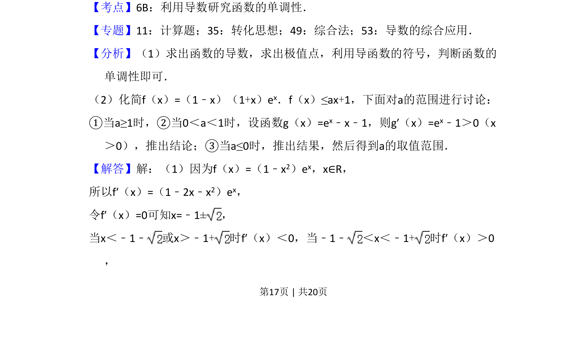
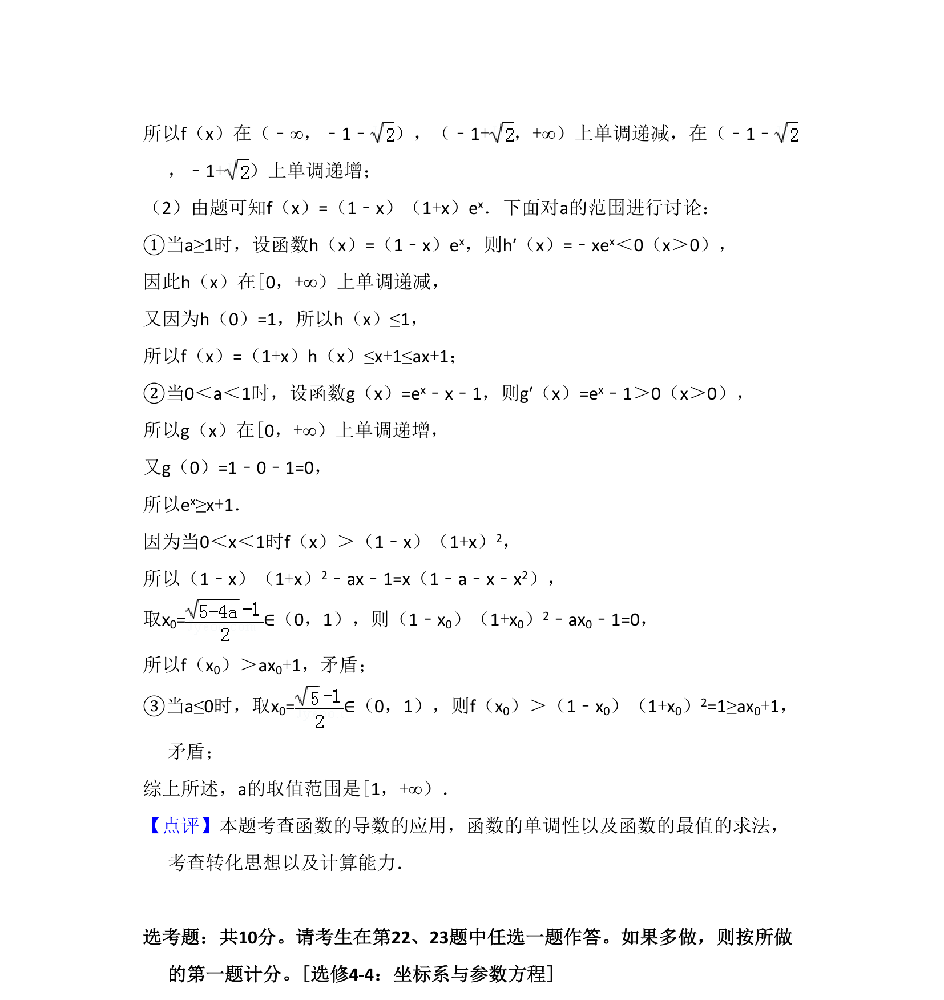

考点：利用导数研究函数的单调性 不等式恒成立 分类讨论
本题考查含参数的函数单调性讨论，以及不等式恒成立条件下求参数取值范围。


📄 原 PDF 第 17 页：
素材/真题/吉林/2008-2024·（吉林）数学高考真题/2017年高考数学试卷（文）（新课标Ⅱ）（解析卷）.pdf
21．（12分）设函数f（x）=（1﹣x2）ex． （1）讨论f（x）的单调性； （2）当x≥0时，f（x）≤ax+1，求a的取值范围．
【考点】6B：利用导数研究函数的单调性．菁优网版权所有 【专题】11：计算题；35：转化思想；49：综合法；53：导数的综合应用． 【分析】（1）求出函数的导数，求出极值点，利用导函数的符号，判断函数的 单调性即可． （2）化简f（x）=（1﹣x）（1+x）ex．f（x）≤ax+1，下面对a的范围进行讨论： ①当a≥1时，②当0＜a＜1时，设函数g（x）=ex﹣x﹣1，则g′（x）=ex﹣1＞0（x ＞0），推出结论；③当a≤0时，推出结果，然后得到a的取值范围． 【解答】解：（1）因为f（x）=（1﹣x2）ex，x∈R， 所以f′（x）=（1﹣2x﹣x2）ex， 令f′（x）=0可知x=﹣1±， 当x＜﹣1﹣ 或x＞﹣1+时f′（x）＜0，当﹣1﹣ ＜x＜﹣1+时f′（x）＞0 ，